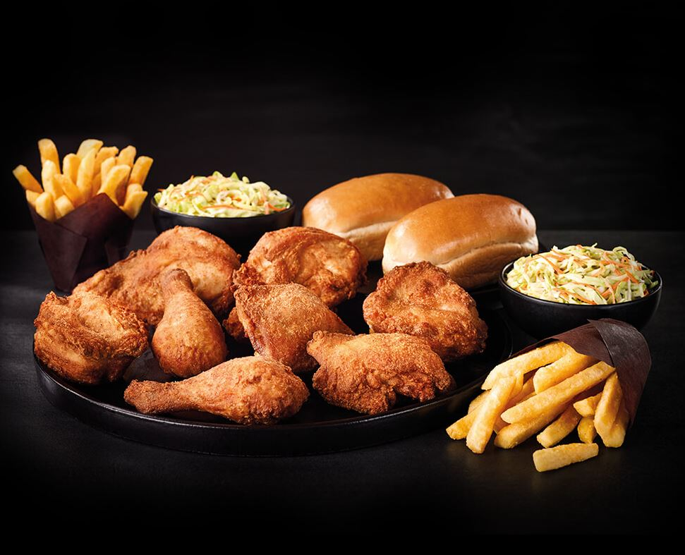
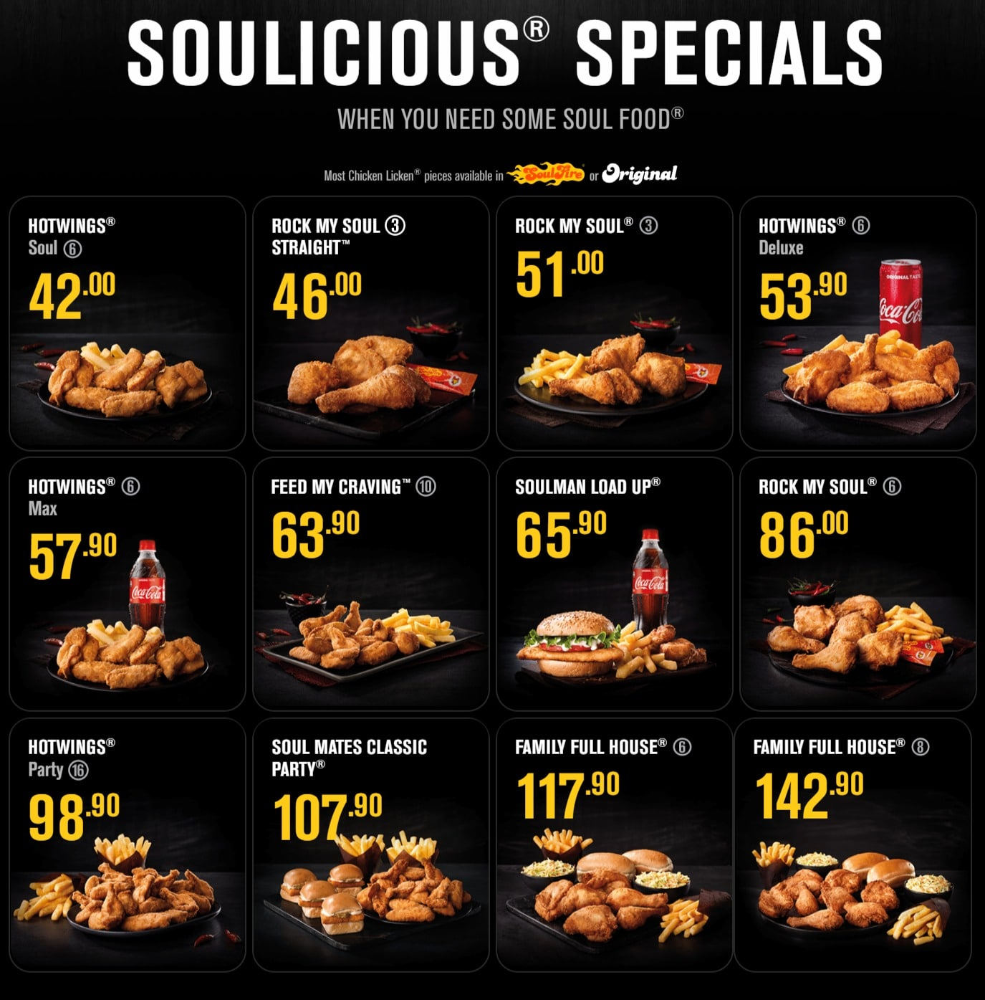
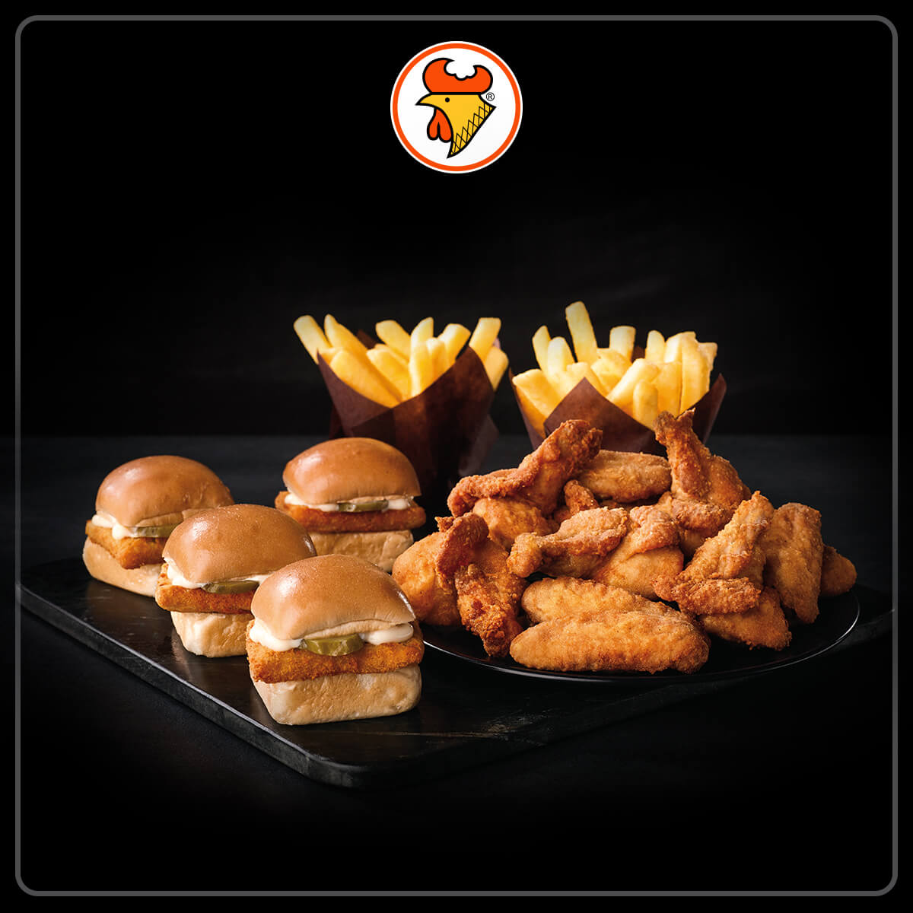
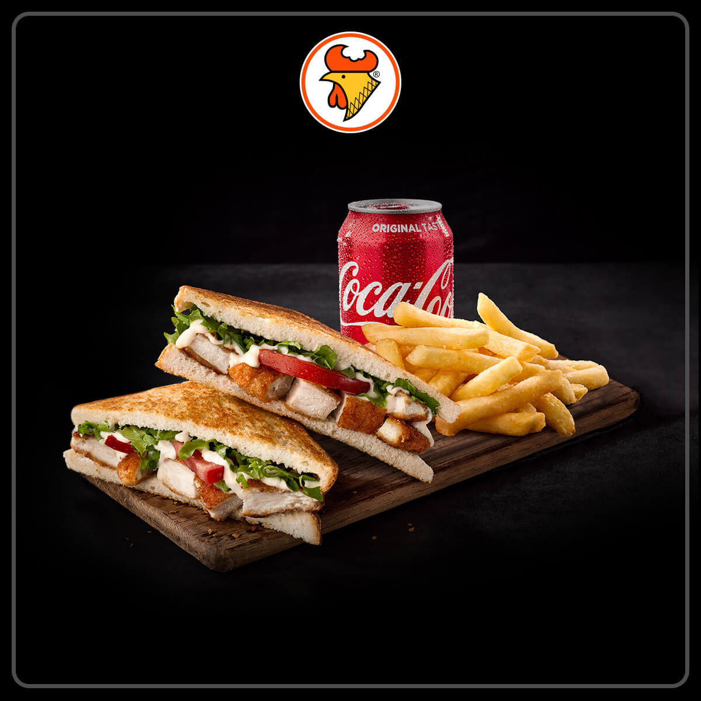

CHICKEN LICKEN
Chicken Licken is a South African fast-food fried chicken restaurant chain. The company had a 5% share of South Africa's fast food market in 2010, tying with McDonald's.
According to a case study published by the Henny Penny Corporation in 2011, Chicken Licken is the "largest non-American-owned fried chicken franchise in the world".
Chicken Licken was founded in South Africa by George Sombonos, the son of a Greek immigrant restaurant owner. Sombonos learned the restaurant trade in the 1970s at the Dairy Den, his father's restaurant in Ridgeway, a suburb in the southern Inner City region of Johannesburg.
LOCATION
SHOP:L32 Located in Food Court